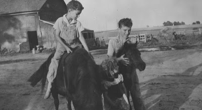

Mostly personal...
1/5/2010
{kind=link}

Tomorrow is my brother Jerry's birthday. Happy Birthday Bro! We grew up as wild west Kansas cowboys, and if you don't believe me, I have photos to prove it. (Jerry is the rider. I'm the stable boss on the right. Our brave sister, Marjorie, chief handler, is asking me why we didn't have a bridle on the colt.)
On a more serious note, two months ago Jerry, and his wife Jane, made a trip to Atlanta to assist as volunteers for Samaritan's Purse/Operation Christmas Child. I wanted to share their experience in hopes that some readers will want to take part this year. Jerry wrote:
"Jane and I returned from a week in Atlanta with Samaritan's Purse /Operation Christmas Child. It was a wonderful experience and a huge blessing. Wow! We processed (along with a couple hundred other volunteers) over 200,000 boxes in the days that we worked in Atlanta. It is an amazing operation-over 5,000,000 boxes collected in the U.S. alone plus 2 or 3 million more boxes collected in 10 other nations world wide that collect the boxes and then help distribute them. This year for the first time, Samaritan's purse was allowed to send boxes into Pakistan although they had to be very carefully screened (no religious symbols, nothing American, no farm animals, no dolls that could be dressed and undressed, nothing provocative, nothing scary, nothing that in any way referred to Christmas-which means no wrapping paper, no Bibles, no Christmas cards, etc.) Jane and I weren't involved in the packing for Pakistan. All of the boxes that we worked on went either to India or to the Ukraine. " Jerry
For more information on Operation Christmas Child, go to:
http://www.samaritanspurse.org/index.php/OCC/Pack_A_Shoe_Box/
For more information on Operation Christmas Child, go to:
http://www.samaritanspurse.org/index.php/OCC/Pack_A_Shoe_Box/